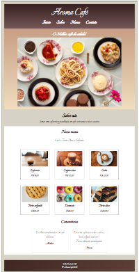

Quem sou eu?
Desenvolvedora Front-End em formação
Sou estudante do último período de Análise e Desenvolvimento de Sistemas, atuando como operadora de teleatendimento na Unimed. No meu dia a dia, utilizo o sistema TOTVS para registro e consulta de dados relacionados a guias de clientes, desenvolvendo atenção aos detalhes, responsabilidade e precisão no tratamento de informações.
Resumo Profissional
Profissional em transição para a área de Tecnologia da Informação, com foco em desenvolvimento web front-end. Possuo conhecimentos práticos em HTML5 e CSS3, com experiência na criação de layouts responsivos utilizando a abordagem mobile first. Atualmente atuo com atendimento ao cliente na área da saúde, utilizando sistemas corporativos, o que fortaleceu minhas habilidades de comunicação, organização e resolução de problemas. Busco minha primeira oportunidade em TI para aplicar e expandir meus conhecimentos.
Competências Técnicas
- HTML5
- CSS3
- Responsividade (Mobile First)
- Visual Studio Code
- GitHub
Tecnologias:
Ferramentas:
Objetivo profissional
Tenho como objetivo profissional atuar como Desenvolvedora Front-End, aplicando e aprimorando minhas habilidades em HTML5, CSS3 e JavaScript para criar interfaces modernas, responsivas e centradas na experiência do usuário. Buscando crescimento profissional e evolução contínua na área de tecnologia.
Projetos
Como projeto prático, desenvolvi um site de Cafeteria utilizando HTML5 e CSS3, contendo menu interativo, comentários fictícios de clientes e exibição de preços de produtos. O projeto foi construído com design responsivo, além de contar com animações na apresentação dos alimentos, proporcionando uma navegação mais dinâmica e atrativa.

Formação
Tecnólogo em Análise e Desenvolvimento de Sistemas — em andamento
Objetivo na Área
Busco uma oportunidade na área de desenvolvimento web como estagiária ou desenvolvedora júnior, onde eu possa aplicar meus conhecimentos em HTML e CSS, aprender novas tecnologias e evoluir profissionalmente dentro da área de TI.